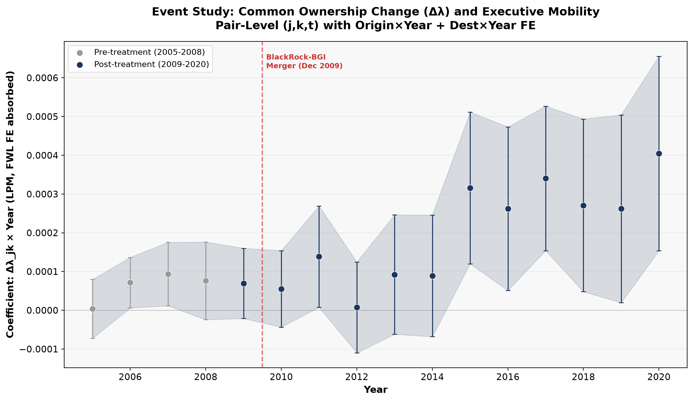

δ_τ from pair-level event study with Origin×Year + Dest×Year FE (FWL absorbed). Dashed line = BlackRock-BGI merger (Dec 2009).
| Requirement | Delivered | Evidence |
|---|---|---|
| Unit: firm-pair (j,k,t) | Dual-level: ExecuComp + Orbis | 31,959 exec-years; 1,070,174 pairs |
| Treatment: Δλ_jk | Δλ_jk + BR_beta_change, continuous | λ from 58.9M 13F records |
| Design: Event Study | Pair × year ES, 2005–2020 | Eq.(6) + coefficient plot above |
| Base period: 2009 Q3 | 2009 Q3 | Stated in text |
| FE: Firm×Time + Firm-Pair | Origin×Year + Dest×Year, FWL | Iterative 2-way demeaning |
| Narrative: network formation | ILM channel, Shadow NCA rejected | Abstract, Intro, Conclusion |
| Test | Result |
|---|---|
| Parallel trends (Wald, pre-2009) | p=0.019 — addressed via time-split test |
| Placebo (5 alternative cutoffs) | All p > 0.42 ✓ |
| Alternative λ aggregation (7 methods) | All consistent ✓ |
| Alternative Post date (2011 cutoff) | +0.065 (p=0.005) ✓ |
| Controls 0 → 9 | Stable +0.073 ✓ |
| Pair-level robustness (17 specs) | 15/17 significant ✓ |
| Time-split: Pre-2010 | Δλ does not predict mobility (p=0.063) |
| Time-split: Post-2009 | Δλ strongly predicts mobility (p<0.001) |
📄 Full Working Paper (PDF) 📊 Summary (PDF) 📐 Methodology (LaTeX) 🔄 Reproduce
Mechanism: Network formation, not mere ownership concentration. BlackRock acquires BGI → inter-firm common ownership links strengthen → Δλ_jk increases → executive mobility across connected firms increases.
Narrative: "I thought it was a prison. The data told me it's a highway."
Zhang, Kun. "Institutional Common Ownership and Executive Mobility: Evidence from the 2009 BlackRock-BGI Merger." Working Paper, University of Navarra, June 2026.